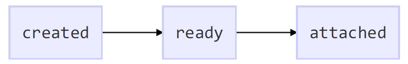
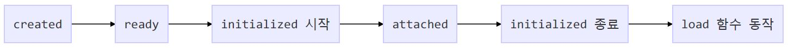
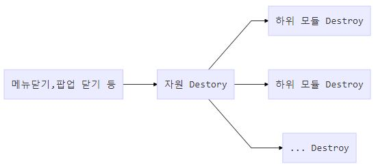

Polymer 초기화 과정

SMARTsuite 9.1 초기화 과정

1. attached 이후에 수동으로 호출해야 하는 초기화 관련 데이터 서비스 호출 자동화한다.
2. 화면 전환 시 불필요한 이벤트 처리 없이 공통 메소드 호출(load())로 소스 간결화
3. initialized 메소드를 업무 모듈에서 구현 하여 사용한다
제거 과정

1. 메뉴 삭제, 팝업 제거, 브라우저 리프레쉬가 이루어질 때 내부적으로 Element Destroy 작업
- Element (메뉴 삭제, 팝업 제거, 브라우저 refresh)
- Element 사용하는 properties (메뉴 삭제, 팝업 제거, 브라우저 refresh)
- Polymer Element, Behavior 등 코어 라이브러리 (브라우저 refresh)